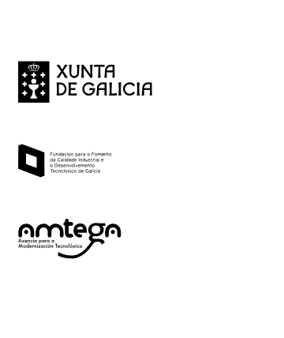

<div class="main wide green-background">
    <div class="text small-text background-gray">
        <h1 class="innertitle">Quen promociona este proxecto?</h1>
        <div>
            <p>Este proxecto é unha das actividades que a OSL realiza ao abeiro do convenio de colaboración asinado coa Fundación para o <strong>Fomento da Calidade Industrial e Desenvolvemento Tecnolóxico de Galicia</strong>. </p>

            <p>SO.XUG forma parte do <strong>Plan de Acción de Software Libre 2012 da Xunta de Galicia</strong> a través da <strong>Axencia para a Modernización Tecnolóxica de Galicia</strong> (AMTEGA).</p>
        </div>
    </div>

    
</div>

